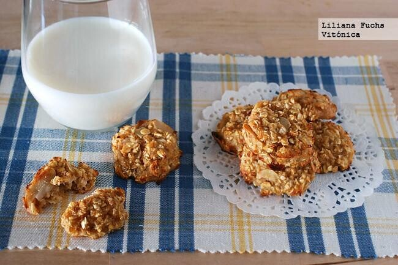

Los azúcares libres y añadidos son los principales enemigos de la
alimentación actual. Sin embargo, nuestro paladar suele preferir platos
dulces y ello conlleva un problema cuando buscamos comer más ligero.
Afortunadamente, podemos acudir a alimentos azúcares naturales para
endulzar sanamente o bien, a edulcorantes. Te mostramos 77 recetas
dulces saludables y sin azúcar, para disfrutar de forma ligera.
Alfajores de avena y choco 🍪🍪

🌸Ingredientes: Para 3 unidades
1 huevo
1/2 taza de harina de avena
1/2 taza de almidón de maíz
1/2 taza de azúcar mascado (O edulcorante a gusto)
1 cdita de esencia de vainilla
2 cdas de aceite de girasol
Chocolate amargo a gusto
Dulce de leche para el relleno
🌸Preparacion:
Batir el huevo con el azúcar y la esencia de vainilla.
Incorporar la harina, la fécula, el aceite y los trozos o chip de
chocolate.
Formar la masa y cortar las tapitas.
Poner en placa apta para horno y hornear por 10 minutos a fuego
bajo.
Dejar enfriar y rellenar estas bombas!!!!
¿Que les parece?
Galletas de avena y manzana

🌸Ingredientes: Para 25 unidades
Puré o compota de manzana 250 g
Copos de avena 80 g
Almendras crudas laminadas 20-50 gramos
Dificultad: Fácil Tiempo total 25m
🌸Preparacion:
Cocción 15 m Precalentar el horno a 180ºC y preparar una bandeja engrasándola o cubriéndola con papel sulfurizado. Si se van a tostar las almendras, colocarlas en una sartén sin grasa y llevar al fuego, removiendo bien, hasta que empiecen a dorarse. Dejar enfriar.
Colocar el puré de manzana en un cuenco y agregar los copos de avena, la sal y la canela. Mezclar bien hasta tener una masa homogénea. Añadir las almendras y otros ingredientes al gusto, si se desea. La textura debe ser muy húmeda, pero tenemos que ser capaces de formar pequeñas porciones sin que se desmoronen. Añadir más avena si fuera necesario.
Con ayuda de un par de cucharillas, distribuir la masa en la bandeja formando galletas redondeadas. Si las hacemos más gruesas quedarán más tiernas por dentro, y viceversa. Hornear durante unos 10-13 minutos, hasta que estén firmes al tacto y ya se hayan dorado bien. Esperar unos minutos fuera del horno y desmoldar con una espátula. Dejar enfriar sobre una rejilla.